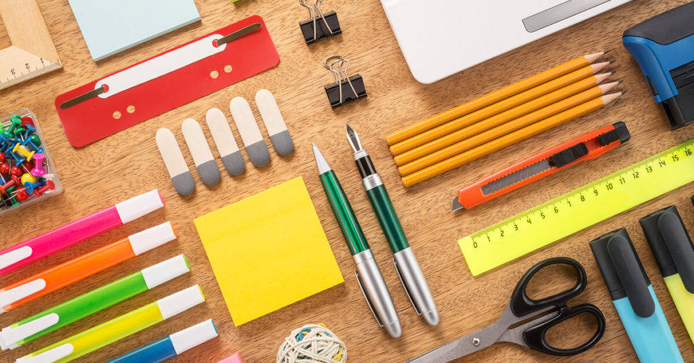

"Your Satisfaction is Our Priority"

"Your Satisfaction is Our Priority"
Zunder Zifflin is a growing paper company based in Alexandra, Virginia. This company was formed in November 2002. Zunder Zifflin not only provides paper for their customers,
but also office supplies, printers, and various stuff. Zunder Zifflin has been known to be one of the companies in the US to be on the lookout as their numbers are off the
charts, even without the help of online shopping/e-commerce.
With this web Zunder Zifflin tries to make customers feel comfortable and satisfied for doing an online shopping. Where Zunder Zifflin promises the completeness and also the
quality of the goods sold. This web also make the costumers feel easier when they want to buy something, because before this web was created, the customers seemed difficult
to buy at Zunder Zifflin.
"Your Satisfaction Is Our Priority"
Staff
| Nama | : | Evan Marvelian |
| NIM | : | 2301856352 |
| : | evan.marvelian@binus.ac.id | |
| Course | : | Human and Computer Interaction |
| Nama | : | Endrico Lansky |
| NIM | : | 2301858553 |
| : | endrico.lansky@binus.ac.id | |
| Course | : | Human and Computer Interaction |
| Nama | : | Reginald Lay |
| NIM | : | 2301852316 |
| : | reginald.lay@binus.ac.id | |
| Course | : | Human and Computer Interaction |